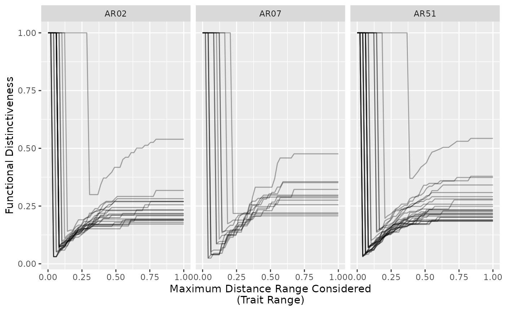

Alternative Distinctiveness definition
Rekyt
2019-05-18
Source:vignettes/new_distinctiveness.Rmd
new_distinctiveness.RmdThe current definition of functional distinctiveness standardizes compared to all the species considered in the species pool. However, especially when investigating on trait competition and hierarchy, it can be important to scale this distinctiveness relatively to the species present in the community.
Presence-Absence
Thus an alternative definition of functional distinctiveness can be given, scaled relatively to a given trait range considered (what matters for species are the species within this trait range, not beyond). Our new distinctiveness measure is \(D_i(T)\), with \(T\) the trait range to consider.
We can imagine three species in a given community positioned on a trait axis:
species_df = data.frame(
species = c("a", "b", "c"),
trait_value = c(-1, 0, 0.5)
)
species_distance = dist(c(a = -1, b = 0, c =0.5))
plot(species_df)
## a b
## b 1.0
## c 1.5 0.5Species \(b\) is closer to species \(c\) than to species \(a\). The greatest distance is observed between species \(a\) and species \(c\).
\(T\) can value from 0 to the maximum observed functional distance among considered species.
Theoretical definition
The proposed formula for \(D_i(T)\) is:
\[ D_{i} (T) = \begin{dcases} 1 & if~~T < \text{min}(d_{ij}) \quad \text{(trait range smaller than distance to closest neighbor)}\\ \frac{\sum\limits_{ \substack{ j = 1 \\ j \neq i \\ d_{ij} \leq T}}^S d_{ij}}{ \sum\limits_{\substack{ j = 1 \\ j \neq i \\ d_{ij} \leq T}}^S 1} & if~~T \geq \text{min}(d_{ij}) \quad (\text{there is one or more species close to focal species within range of T}) \end{dcases} \] This would given the following formula for the distinctiveness of species \(b\), in the community with species \(a\) and \(c\):
\[ D_b(T) = \begin{dcases} 1 & if ~~ T < d_{bc} = 0.5 \\ d_{bc} & if ~~ d_{bc} = 0.5 \leq T < d_{ba} = 1 \\ \frac{d_{bc} + d_{ba}}{2} & if ~~ T \geq d_{ba} = 1 \end{dcases} \]
Implementation
Implementing this version of distinctiveness would give:
alternative_distinctiveness = function(pres_mat, distance_obj, given_T) {
dist_mat = as.matrix(distance_obj)
kept_sp = funrar:::species_in_common(pres_mat, dist_mat)
dist_mat = dist_mat[kept_sp, kept_sp, drop = FALSE]
# Correspondance matrix (tracking which species we want to keep)
corr_dist = dist_mat
corr_dist[dist_mat > given_T] = 0
corr_dist[dist_mat <= given_T] = 1
diag(corr_dist) = 0
# Across sites
# given_pres is a vector of presences per site
di_mat = apply(pres_mat, 1, function(given_pres) {
index_mat = given_pres %*% (dist_mat * corr_dist) # Sum of distances per species
denom_mat = given_pres %*% corr_dist # Number of distances considered per species
index_mat = index_mat / denom_mat
index_mat[given_pres == 0] = NA
index_mat[is.nan(index_mat)] = 1
return(index_mat)
})
di_mat = t(di_mat)
dimnames(di_mat) = dimnames(pres_mat)
dplyr::mutate(funrar::matrix_to_stack(di_mat, "Di"), given_range = given_T)
}Here we truncate the distance matrix in order to “nullify” the effect of species that are not in specified range.
presence_matrix = matrix(c(rep(1, 3), 1, 0, 1, 1, 1, 0), nrow = 3, ncol = 3,
dimnames = list(site = c("s1", "s2", "s3"),
species = c("a", "b", "c")))
# Test over a ragne of possible T values
all_T = lapply(seq(0.5, 1.5, length.out = 50),
function(given_number) alternative_distinctiveness(presence_matrix,
species_distance,
given_number))
all_T = dplyr::bind_rows(all_T)We can visualize those relationships:
## Registered S3 methods overwritten by 'ggplot2':
## method from
## [.quosures rlang
## c.quosures rlang
## print.quosures rlangggplot(all_T, aes(given_range, Di, color = species)) +
geom_line(size = 1, alpha = 1/2) +
facet_grid(~site) +
labs(x = "Fixed distance range",
y = "Functional Distinctiveness",
color = "Species")
Using real data
We’ll be using the dataset aravo from the ade4 package.
library("funrar")
data("aravo", package = "ade4")
# Site-species matrix
mat = as.matrix(aravo$spe)
# Convert matrix to presence-absence matrix
mat[mat > 0] = 1
# Example of trait table
tra = aravo$traits[, c("Height", "SLA", "N_mass")]
# Distance matrix
dist_mat = compute_dist_matrix(tra, metric = "gower")## Warning in compute_dist_matrix(tra, metric = "gower"): Only numeric traits
## provided, consider using euclidean distance.dist_mat = (dist_mat - min(dist_mat))/diff(range(dist_mat))
names(dimnames(mat)) = c("site", "species")
# Compute different values of distinctiveness using various ranges
all_ranges = lapply(seq(0, 1, length.out = 50), function(given_range) {
alternative_distinctiveness(mat, as.dist(dist_mat), given_range)
})
all_ranges = dplyr::bind_rows(all_ranges)Now we can visualize the influence of the trait range value
ggplot(subset(all_ranges, site %in% c("AR07", "AR51", "AR02")),
aes(given_range, Di, group = species)) +
geom_line(alpha = 1/3) +
facet_wrap(~site) +
labs(x = "Maximum Distance Range Considered\n(Trait Range)",
y = "Functional Distinctiveness")
We see that species have close neighbors at different distances (leap from top left to bottom left of the graph). This shows the closet neighbors for each species.
As proposed we can also distinctiveness relative to trait range and see what it changes:
all_ranges = dplyr::mutate(all_ranges, scaled_Di =
ifelse(Di != 1, Di / given_range, Di))
ggplot(subset(all_ranges, site %in% c("AR07", "AR51", "AR02")),
aes(given_range, scaled_Di, group = species)) +
geom_line(alpha = 1/4) +
facet_wrap(~site) +
labs(x = "Considered Trait Range\n(Functional Distance)",
y = "Scaled Functional Distinctiveness\n(over trait range)")This reflects the relative (in terms of trait range considered) distinctiveness. Meaning that close species in a small range have similar distinctiveness than further apart species in larger ranges.
Considering Abundance
Now that we have a version with presence and absences we can try to think about a alternative version of distinctiveness using abundances.
We need the index to behave the following way: an rare species in trait range should be more distinct than a common species in that range. A species close to a rare species in a trait range but far from a common species should be more distinct than a species close to a common species and far away from a rare one.
The current definition of functional distinctiveness with relative abundances is:
\[ \tilde{D_i} = \frac{ \sum\limits_{ \substack{j = 1 \\ j \neq i}}^S d_{ij} \times Ab_j}{ \sum\limits_{ \substack{j = 1 \\ j \neq i}}^S Ab_j} \] with \(Ab_j\) the relative abundance of species \(j\) in given community.
Theoretical definition
If we try to consider the constraints above we can write the index as follow
\[ D_i (T) = \begin{dcases} 1 & if ~~ T < \text{min}(d_{ij})\\ \left( \frac{ \sum\limits_{ \substack{j = 1 \\ j \neq i \\ d_{ij} \leq T}}^S d_{ij} \times Ab_j }{ \sum\limits_{ \substack{j = 1 \\ j \neq i \\ d_{ij} \leq T}}^S Ab_j } \right) \times \left(1 - \frac{ \sum\limits_{ \substack{j = 1 \\ j \neq i \\ d_{ij} \leq T}}^S Ab_j }{ N } \right) & if ~~ T \geq \text{min}(d_{ij}) \end{dcases} \] with \(S\) the number of species in the considered community, \(Ab_j\) the relative abundance of species \(j\) in the community and \(N\) the total number of individual in the community.
The problem here is the term on the right: \[\frac{ \sum\limits_{\substack{j = 1 \\ j \neq i \\ d_{ij} \leq T}}^S Ab_j }{ N } \]
As \(Ab_j = \frac{N_j}{N}\) the term rather be: \[ \sum\limits_{\substack{j = 1 \\ j \neq i \\ d_{ij} \leq T}}^S Ab_j\]
Definitive formula
which gives the following definition in the end: \[ D_i (T) = \begin{dcases} 1 & if ~~ T < \text{min}(d_{ij})\\ \left( \frac{ \sum\limits_{ \substack{j = 1 \\ j \neq i \\ d_{ij} \leq T}}^S d_{ij} \times Ab_j }{ \sum\limits_{ \substack{j = 1 \\ j \neq i \\ d_{ij} \leq T}}^S Ab_j } \right) \times \left(1 - \sum\limits_{ \substack{j = 1 \\ j \neq i \\ d_{ij} \leq T}}^S Ab_j \right) & if ~~ T \geq \text{min}(d_{ij}) \end{dcases} \]
Reconciling with presence-absence definition
We can also check how this definition differs from the previous one by saying that \(Ab_j = \frac{1}{N}\) and \(N = S\) (one individual per species in each community) this gives us:
From we find back the definition of \(D_i(T)\) with presence and absences only. However there is an additional that resembles to a mean distance. It’s the sum of all the distances to species within range of the focal species over the total number of species in the community. This term depends on the number of species in the community.
From we see that as the range comprises more species the term between parenthesis approaches zero and thus we observe a (near-)zero distinctiveness for all the species in the community whatever the functional distances between species.
In the end, this definition does not seem to reconcile well with the presence-absence definition.
Implementation
Similar to the strategy we can implement this definition of functional distinctiveness by using a correspondance matrix in which we nullify the importance of species that are further away than the given threshold. In order to test the behavior of the metric we design an abundance matrix with the same species again a, b, and c:
ab_mat = matrix(c(rep(1/3, 3), 1/6, 1/6, 4/6, 4/6, 1/6, 1/6), nrow = 3, ncol = 3,
dimnames = list(site = c("s1", "s2", "s3"),
species = c("a", "b", "c")),
byrow = TRUE)
alternative_distinctiveness_abundance = function(abund_mat, dist_matrix,
given_range) {
dist_mat = dist_matrix
kept_sp = funrar:::species_in_common(abund_mat, dist_mat)
dist_mat = dist_mat[kept_sp, kept_sp, drop = FALSE]
# Correspondance matrix (tracking which species we want to keep)
corr_dist = dist_mat
corr_dist[dist_mat > given_range] = 0
corr_dist[dist_mat <= given_range] = 1
diag(corr_dist) = 0
# Across sites
# given_pres is a vector of presences per site
di_mat = apply(abund_mat, 1, function(given_ab) {
index_mat = given_ab %*% (dist_mat * corr_dist) # Sum of distances per species
denom_mat = given_ab %*% corr_dist # Number of distances considered per species
index_mat = (index_mat / denom_mat) * (1 - denom_mat)
index_mat[given_ab == 0 | is.na(given_ab)] = NA
index_mat[is.nan(index_mat)] = 1
return(index_mat)
})
di_mat = t(di_mat)
dimnames(di_mat) = dimnames(abund_mat)
dplyr::mutate(funrar::matrix_to_stack(di_mat, "Di"),
given_range = given_range)
}Which gives the following results for or situation:
ab_di_all_ranges = lapply(seq(0, 1.5, length.out = 50),
function(given_number) alternative_distinctiveness_abundance(ab_mat,
as.matrix(species_distance),
given_number))
ab_di_all_ranges = dplyr::bind_rows(ab_di_all_ranges)
ggplot(ab_di_all_ranges, aes(given_range, Di, color = species)) +
geom_line(size = 1) +
facet_wrap(~site, labeller = as_labeller(c(s1 = "s1 (1/3 rel. abund each)",
s2 = "s2 (a=1/6, b=1/6, c=4/6)",
s3 = "s3 (a=4/6, b=1/6, c=1/6)"))) +
labs(x = "Considered Range",
y = "Functional Distinctiveness")
We clearly see the difference between s2 and s3 comparing species b and c. In s3, when c has the same relative abundance as b, both species share the same distinctiveness until the range equals 1 (distance between A & B).